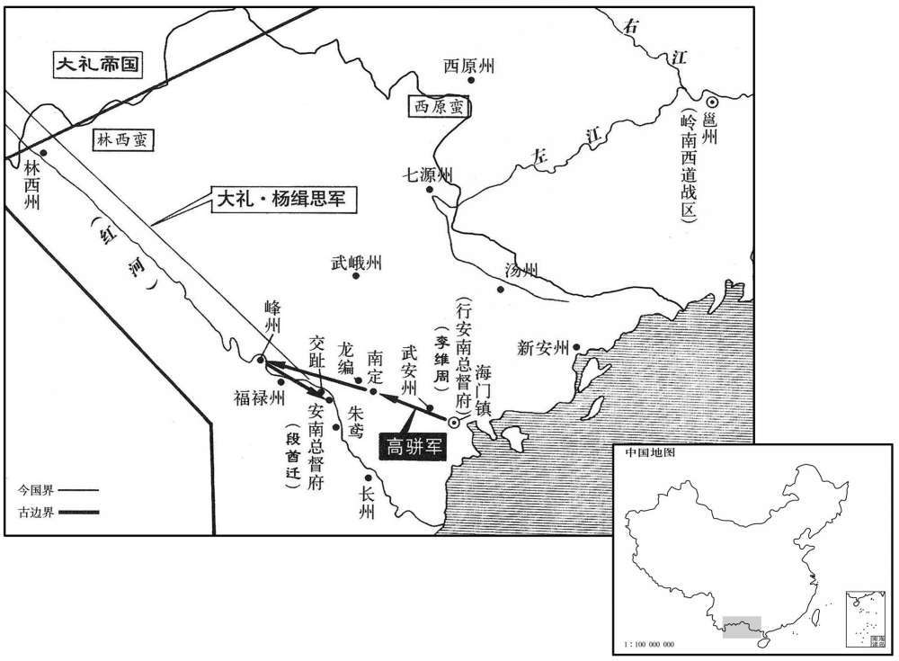

公元865年资治通鉴：本年记事、原文与白话对照
按原书编年位置阅读；追叙和史论不等于本年发生的事件。白话采用所据译本，缺译不以生成译文补齐。
卷250 · 本年记事
公元865年 · 唐懿宗昭圣恭惠孝皇帝咸通六年
六年〔（乙酉、八六五）〕
上传原文的注释括号有异常，字符原样保留；无法可靠划分的段落默认全文显示。
本年事件索引（现代整理）

本年形势与背景参考图
春，正月，丁已，始以懿安皇后配飨宪宗室。时王皞复为礼院检讨官，更申前议，朝廷竟从之。〔王皞议见二百四十卷宣宗大中二年。〕
春季，正月，丁巳（疑误），唐懿宗同意将懿安皇后的神位配置于唐宪宗神主像的庙室。当时王再任礼院检讨官，重申先前的议论，朝廷最后批准了他的奏议。
诸道进私白者，〔唐时诸道岁进阉儿，号曰私白。〕闽中为多，故宦官多闽人。福建观察使杜宣猷每寒食遣吏分祭其先皞，宦官德之，庚申，以宣猷为宣歙观察使，时人谓之「敕使墓」。
地方诸道向朝廷进献阉割小儿，以闽中为最多，所以官大多是闽人。福建观察使杜宣猷每当寒食之时，都要派遣官员分别去祭祀宦官祖先的坟墓，宦官们感恩戴德，在唐懿宗面前为杜宣猷说好话，庚申（疑误），唐懿宗任命杜宣猷为宣歙观察使，当时人戏称杜宣猷为“宦官敕使的守墓户”。
三月，中书侍郎、同平章事萧寘薨。
三月，中书侍郎、同平章事、萧去世。
夏，四月，以前东川节度使高璩为兵部侍郎、同平章事。璩，元裕之子也。〔璩，其于翻。元裕见二百四十五卷文宗太和八年。
两版字句有差异，建议核对原文。
夏季，四月，唐懿宗任使前东川节度使高琚为兵部侍郎、同平章事。高琚是高元裕的儿子。
杨收建议，以「蛮寇积年未平，两河兵戍岭南瘴雾物故者什六七，请于江西积粟，募强弩三万人，以应接岭南道近便，仍建节以重其权。」从之。五月，辛丑，置镇南军于洪州。
杨收向唐懿宗建议，以“南诏蛮寇的侵扰多年不能平定，两河军队远戍岭南由于瘴气和水土不服而死掉的人有十分之六七，请求在江西屯积军粮，召募强健的弓弩手三万人，用以应接岭南的军事需要，距离岭南也较近，军队调动也更方便，并且在江西建节设军镇，以加重江西镇帅的权力。”唐懿宗表示同意。五月，辛丑（二十一日），唐懿宗下令于洪州设置镇南军。
巂州刺史喻士珍贪狯，〔狯，古外翻。〕掠两林蛮以易金；南诏复寇巂州，〔复，扶又翻。〕两林蛮开门纳之，南诏尽杀戍卒，士珍降之。〔降，户江翻。〕
州刺史喻士珍贪鄙狡猾，掠夺两林蛮人部落，强迫两林蛮人用黄金赎身；南诏蛮军再次侵寇州，两林蛮族人于是开城门接纳南诏军，南诏蛮军入州城杀尽唐军戍卒，喻士珍向南诏蛮军投降。
壬寅，以桂管观察使严譔为镇南节度使。譔，震之从孙也。〔譔，雏免翻。严震镇兴元，德宗播迁，震有迎奉之功。从，才用翻。〕
壬寅（二十二日），唐懿宗任命桂管观察使来为镇南军节度使。严是是来震的从孙。
六月，高璩薨。
六月，高琚去世。
以御史大夫徐商为兵部侍郎同平章事。
唐懿宗任命御史大夫徐商为兵部侍郎、同平章事。
秋，七月，立皇子侃为郢王，俨为普王。
秋季，七月，唐懿宗立皇子李侃为郢王，立李俨为普王。
高骈治兵于海门，未进；监军利瓦伊周恶骈，欲去之，屡趣骈使进军。〔治，直之翻。恶，乌路翻。去，羌吕翻。趣，读曰促。〕骈以五千人先济，约维周发兵应援；骈既行，结周拥余众，不发一卒以继之。九月，骈至南定，〔高祖武德四年，分交趾所管宋平县置南定县，时属安南府。安南府，即交趾。宋白曰：南定县，汉日南郡西卷县地。峰州蛮众近五万；方获田，〔近，其靳翻。刘昫曰：峰州，隋交趾郡之嘉宁县，唐武德四年置峰州嘉宁，汉麊冷县地。〕骈掩击，大破之，〔考异曰：旧纪、实录皆云五月骈奏于邕管大败林邑蛮。按林邑在海南，自至德后号环王，与中国久绝。刘昫但见南蛮则谓之林邑，误也。新南诏传亦云骈以选士五千渡江，败林邑兵于邕州，亦承此而误也。旧纪又云：「是岁秋，高骈自海门进军，破蛮军，收复安南府。」盖因骈今秋发海门，遂云复安南耳。复安南实在明年也。补国史云：「五年，九月，高公力战，破峰州蛮于南定县。」按张茵以五年正月句当交州，受诏收复安南。补国史云经年不进军，乃以骈代之。则骈岂得以其年九月已破峰州蛮乎！补国史又云：「骈破峰州蛮后，近四月余日，表报不至，朝廷以王晏权代之。六月，高公进军收复安南。」亦不云几年六月。盖骈以六年九月破峰州蛮。七年六月安南耳。实录又云：「九月，屏奏破蛮龙州营寨，并烧食粮等事。诏骈令于当界守备，缘近有赦文已许恩宥，伺其悛改，亦未要更深加讨逐。」按赦在明年十一月，此诏必在骈已平安南后，实录误也。新传又云骈击南诏龙州屯，蛮酋烧赀畜走龙州，即安南所管龙编县也。〕收其所获以食军。〔获，户郭翻，刈稻也。，食祥吏翻。〕
高骈在海门整治军队，尚未进兵；宦官监军李维周讨厌高骈，想将高骈挤走，多次催促高骈，要他赶快向安南进军。高骈派五千人先渡海进发，与李维周约好，让他发兵前去支援；高骈既已出发，李维周接管其余留在海门的军队，却不调一兵一卒继后跟进。九月，高骈率军来到南定县，峰州的蛮军五万人正在田里收割水稻，高骈突然袭击，大破蛮军，得蛮人所收获的稻米，用来供应军粮。
冬，十二月，壬子，太皇太后郑氏崩。〔考异曰：旧传，大中末崩，误也。今从实录。〕
冬季，十二月，壬子（初五），太皇太后郑氏驾崩。